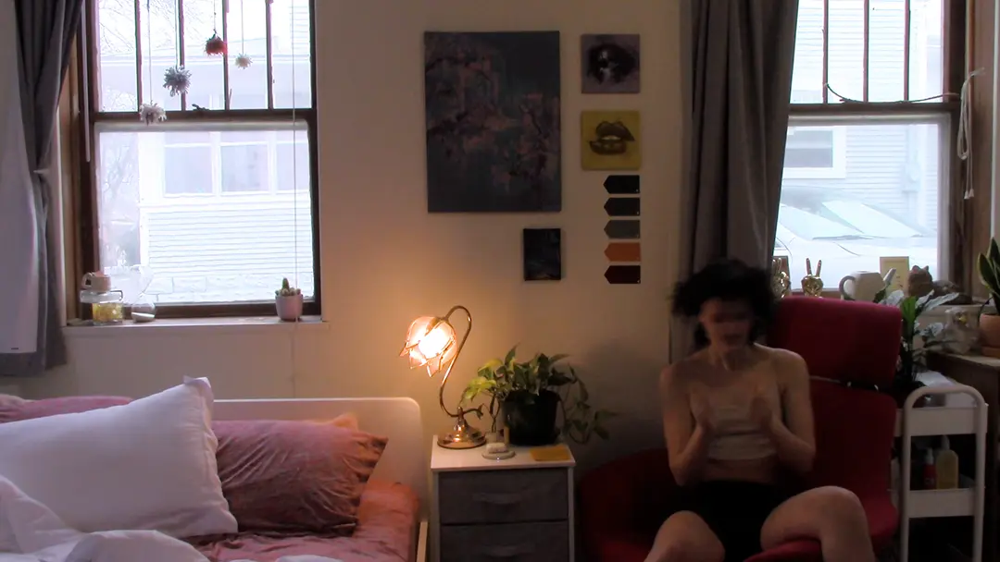

THIS IS NOT A STATEMENT

Choosing not to remove your body hair doesn't have to be a statement or a rebellion against social norms (though to be clear, statements and rebellions are rad). Sometimes, body hair is simply a form of self-expression. THIS IS NOT A STATEMENT is the beginning of my work about body hair and planted the seed for what ultimately became my BFA show. Here's to body hair as an accessory!
Music: Rebel Girl by Bikini Kill